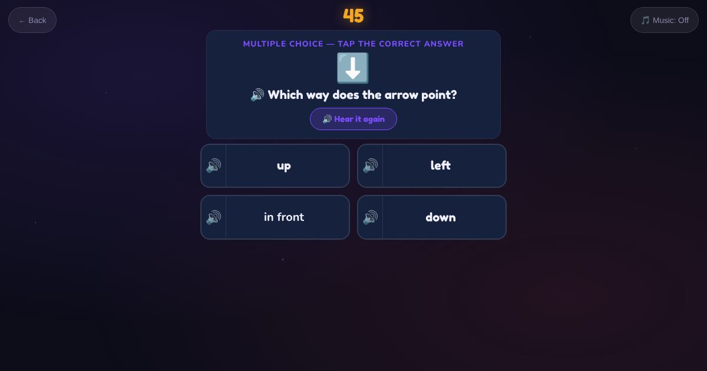

For teachers and tutors
About Where Is It
Direction and position words. The learner sees an arrow and answers which way it points (up, down, left or right), or sees a person and a box and answers whether the box is in front or behind.

How to play
- Look at the picture.
- Listen to the question.
- Tap the word.
Play it as a class
Choose Where Is It in the Teacher Game.